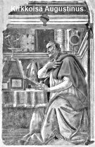
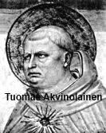
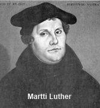
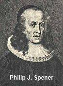
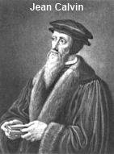
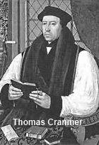

I. Kristinusko Rooman valtakunnassa (-500 j.Kr.)
II. Kristinusko keskiajalla (500-1500)
III. Uskonpuhdistuksesta uuteen aikaan (1500-1800)
IV. Nykyajan kristikunta (1800-)
I. Kristinusko Rooman valtakunnassa (-500 j.Kr.)
1. Kristinuskon synty
• Alkuna Jeesus Nasaretilaisen toiminta ja opetukset (n. 26-30 j.Kr.)
• Lähteet ajalta n. 50-150 j.Kr.: Uusi testamentti (erityisesti Apostolien teot), Apostoliset isät, ei-kristilliset lähteet (Josefus, Tacitus, Plinius nuorempi, Suetonius)
• Alkuajan pääsuuntaukset:
1) Juutalaiskristillisyys
- alkuna Pyhän Hengen vuodatus (Apt.2)
- keskuksena Jerusalem
- johtajina apostoli Pietari ja Jaakob "Herran veli"
- lähetystyö diasporajuutalaisten (hajaannuksessa elävien) keskuuteen
- tuli noudattaa juutalaisia tapoja (aluksi mm. ympärileikkaus)
2) Hellenistikristillisyys
- keskuksena Syyrian Antiokia
- johtajana Paavali
- ristiriitoja juutalais- ja hellenistikristittyjen välillä ratkottiin Jerusalemin apostolikokouksessa v. 46 j.Kr. (Apt.15. luvun päätöslauselman mukaan ei saanut syödä epäjumalille uhrattua lihaa, verta tai lihaa josta veri ei ole laskettu eikä saanut tehdä huorin)
3) Gnostilaiskristillisyys
- poikkesi edellisistä
- Jeesus jumalallisen gnoosiksen eli tiedon tuoja (ei niinkään sovittaja)
- Syyriassa ja Egyptissä (Nag Hammadin tekstit)
- mm. Tuomaan, Filippuksen ja Marian evankeliumit (kahdessa jälkimmäisessä vihjeitä siitä, että Jeesus olisi seurustellut Maria Magdaleenan kanssa).
• Kristinuskon leviäminen:
- alkuna Paavalin lähetysmatkat
- ulkonaiset edellytykset: pax romana, kreikan kieli, hyvät kulkuyhteydet ja uskonnollinen suvaitsevaisuus
- sisäinen vetovoima: monoteismi, korkea moraali, lähimmäisenrakkaus
- tärkeimmät keskukset: Jerusalem, Antiokia, Aleksandria, Rooma, Karthago
2. Kirkko - vainotusta valtionuskonnoksi
• Vainojen syitä:
- kieltäytyminen keisarinpalvonnasta
- huhut ehtoollisesta veriuhriateriana
- voimakas leviäminen ja suosio
• Rooman palo v. 64 ja keisari Neron määräämä vaino
- vain paikallinen, Rooman kaupunkia koskeva
- Pietari ja Paavali kuolivat (Legendat: Pietari - Quo Vadis? Naulitiin pääalaspäin ristille. Paavali - mestattiin miekalla)
• Aluksi vainot paikallisia, vasta 200-luvulla valtakunnan laajuisia
- Deciuksen (249-251) ja Valerianuksen (253-260) vainot
- Diocletianuksen vaino (284-305)
• Vainojen seurauksia:
- kristittyjen rohkeus herätti ihastusta
- suosio kasvoi
• Kristinuskosta valtionuskonto
- Konstantinus Suuri (306-337) lopetti vainot v. 311
- Theodosius Suuri (379-395) nosti ainoaksi sallituksi valtionuskonnoksi
- kirkosta tuli osin valtion vääryyksien pyhittäjä ja ns. nimikristillisyys kasvoi (kaikkien oli pakko kuulua kirkkoon), ns. laitoskirkon kehitys alkaa
3. Kristillinen elämä ja ajattelu vanhalla ajalla
• Jumalanpalvelus ja kirkolliset juhlat
- aluksi kokoonnuttiin kodeissa, 200-luvulla kirkkosaleja (basilikat)
- juuret synagogajumalanpalveluksessa
- raamatunluku, rukous ja ehtoollinen
- sunnuntain, Herran päivän vietto
- tärkeimmät juhlat: pääsiäinen, helatorstai ja helluntai, joulu (300-luvulta)
• Kaste liitti seurakunnan jäseneksi
- kastetunnustus > uskontunnustus
- aluksi aikuiskaste, mahdollisesti myös lapsikaste
- sekä valelu- että upotuskaste
• Kirkon hallinto
- virat: piispat (kaitsijat), vanhimmat ja diakonit
- patriarkat: tärkeimpien srk:ien piispat (Rooma, Konstantinopoli, Antiokia, Jerusalem, Aleksandria)
• Kristillisen teologian synty
- syynä kristillisten harhaoppien torjuminen
- apologeetat ja kirkkoisät
- Justinos Marttyyri (k. 165): "Kristinusko on ainoa tosi filosofia".

- AURELIUS AUGUSTINUS (354-430):
- puhetaidon opettaja, tunsi filosofiaa
- kääntymys Milanossa ja piispa Ambrosiuksen kasteoppilaaksi
- Hippon kaupungin piispa
- tärkeimmät teokset: Tunnustukset (historian ensimmäinen omaelämänkerta), Jumalan valtakunnasta
- korosti: perisyntiä, Jumalan armoa, predestinaatiota
- historia Jumalan ja Saatanan välistä taistelua
• UT:n kanonisoiminen päättyy n. 400
4. Luostarilaitoksen synty
• Askeettinen liike syntyi:
- kirkon maallistumista vastaan
- uusplatonisuuden vaikutuksesta (ruumis arvoton sielun rinnalla)
- Jeesuksen opetus maailmasta luopumisesta (tulkittiin kirjaimellisesti)
• Yksinäiset erakot (anakoreetit = pois vetäytyneet)
- Egyptin Antonios (n. 251-356)
- Syyrian pylväspyhimykset (mm. Simon)
• Erakot tapasivat toisiaan ja alkoivat elää samoilla alueilla > erakkokylä, jossa yksi henkilö nousee johtajaksi ja syntyy yhteiset säännöt > luostari
• Egypt. Pakomioksen (n. 290-346) luostarisääntö:
- kuuliaisuus luostarin esimiehelle
- naimattomuus
- köyhyys
- ruumiillinen työ
- hartauden harjoitus
• Itä (myöh. ortodoksit): Basileios Suuri (n. 330-379)
- tiivis yhteys kirkkoon
- korosti askeesia ja henkistä työtä
- miesjohtaja: igumeeni, naisjohtaja: igumenia
• Länsi (katoliset): Benedictus Nursialainen (n. 480-550)
- Monte Cassinon luostari
- ora et labora = rukoile ja tee työtä
- korosti kulttuurityötä ja maataloutta
- miesjohtaja: apotti, naisjohtaja: abbedissa
• Luostarien merkitys:
- teologinen tutkimus ja kirjallisuuden kopioiminen
- mystiikan harjoittaminen
- lääkintätaidon kehittäminen
- maanviljelyn kehittäminen
- tieteellinen tutkimus
- majatalona toimiminen
- laupeudentyö
II Kristinusko keskiajalla (500-1500)
1. Kristikunnan jakautuminen
• Idän eli Bysantin kirkko (ortodoksit)
- taustana Rooman jakautuminen ja Länsi-Rooman tuho kansainvaelluksissa v. 476
- Itä-Rooman keisari Justinianus Suuri (527-565) loi yhtenäisen valtiokirkon
- lähetystyö slaavien keskuuteen ja Venäjälle (Kiovan suurruhtinas Vladimirin kaste v. 988)
- islam valtasi Konstantinopolin v. 1453
• Lännen kirkko (katoliset)
- Kirkko kesti kansainvaellukset ja käännytti germaanit ja myöhemmin frankit (Klodovig v. 496)
- Rooman piispa Leo Suuri ottaa itselleen arvonimen paavi (440-461) (paavi Pietarin sijaisena)
- paavit liitossa lännen keisarin kanssa
- Kaarle Suuri (742-814) pyrkii luomaan kristillisen imperiumin
- miekkalähetys ja ristiretket Pyhäänmaahan ja Pohjolaan (1000-1300)
• Idän ja lännen kirkkojen ero v. 1054
- jo varhain erosi ns. skismakirkkoja, joilla opillisia eroja (Jeesuksesta, pelastuksesta, pyhityksestä) > oppiriitoja ratkottiin konsiileissa eli kirkolliskokouksissa
- syyt eroon:
1) kulttuurierot: rooma <> hellenismi
2) kielierot: latina <> kreikka
3) kirkkohallinto (kateus ja kilpailu): paavi <> patriarkka
4) oppipainotuserot: moraali ja pelastus (länsi) <> mystiikka ja filosofia (itä)
5) uskontunnustuksen Filioque-kiista (länsi lisäsi Pyhän Hengen lähtevän myös "Pojasta")
- eron seuraukset:
1) riidat ja erimielisyydet kirkkojen välillä syvenivät > yhtenä huipentumana katolisen kirkon 4. ristiretki Konstantinopoliin vuonna 1204.
2) kilpailu lähetystyössä (ja alueiden valtaamisessa) lisääntyi > mm. miekkalähetys ja ristiretket Pohjolaan
3) islamin valta idässä kasvoi > seurauksena lopulta Bysantin tuhoutuminen.
- pannaanjulistukset kumottiin vasta v. 1965
2. Lännen kirkollinen yhtenäiskulttuuri
• Paavius (paavi = papa, isä)
- Pietarin seuraaja
- ylin valta koko kirkossa
- erehtymätön lausuessaan ex cathedra uskoa tai moraalia koskevan opin (oppi muotoiltiin virallisesti 1870-luvulla, mutta toimi käytännössä jo sitä ennen)
- selibaatti eli naimattomuus
- Pipin Pienen (714-768) aikana kirkkovaltio paaville
• Tärkeitä paaveja:
- GREGORIUS SUURI (590-604)
- kohensi kirkon taloutta
- kehitti oppeja: kiirastuli, messu-uhri, pyhimysten esirukous
- arvosti pyhäinjäännöksiä ja ihmeitä > liikanimi: taikauskon isä
- gregoriaaninen kirkkomusiikki
- GREGORIUS VII (1073-1085)
- päämääränä paavien maailmanvalta
- pappien selibaatti
- INNOCENTIUS III (1198-1216)
- paavi on Kristuksen sijainen
- paavin vallan huipentuma
• Kirkon voiman tausta:
- sivistyneistö pappeina
- paavin kuuria eli hallintovirkamiehistö erittäin taitavaa (mm. rahataloudessa)
- latinan kieli
- uskontopakko
- pelko: kiirastuli, inkvisitio ja noitavainot (1200-)
- anekauppa
- kirkko hallitsi kasvatuksen, tieteen, oikeusistuimen, taiteen jne. aloilla
• Skolastiikka eli koulutiede
- 1100-luvulla yliopistot (Pariisi,Bologna, Oxford)
- Aristoteleen filosofia sovelletaan teologiaan
- kristinusko perusteltavissa järjellä

- TUOMAS AKVINOLAINEN (1225-1274)
- dominikaanimunkki
- opiskeli Pariisissa (lempinimi "tyhmä härkä")
- teos: Summa Theologiae
- kirkon tärkein opettaja ja filosofi, joka julistettiin pyhimykseksi v.1323
• 1300-luvulla kirkon valta murtuu
- paavien ns. Avignonin vankeus
- hallitsija valitsi oman paavin ja varsinainen paavi joutui pakenemaan Roomasta Avignoniin
3. Keskiajan luostarilaitos
• Clunyn liike n. 910-1100
- syntyi benediktiiniläisluostarin perustalta
- luostarit suoraan paavin alaisuudessa
- irti maallisesta vallasta
- loistokas messu, hiljentyminen
- munkkien tehtävä ylistää Jumalaa
- ei askeesia, ei työtä, ei teologiaa, vaan jumalanpalveluselämän korostus
• Kerjäläisveljistöt
- vaativat kirkon uudistusta
- apostolinen elämä ihmisten parissa
- DOMINIKAANIT (virallistettu 1216)
- esp. Dominicus (k. 1221)
- saarnaveljet (mustat veljet)
- myöhemmin inkvisition hoito
- FRANSISKAANIT (vir. 1223)
- Franciscus Assisilainen (k. 1226)
- vähäiset veljet (harmaat veljet)
- laupeudentyö
III Uskonpuhdistuksesta uuteen aikaan (1500-1800)
1. Reformaation taustatekijät
• Paavin vallan heikkeneminen alkoi 1300-luvulla (Avignonin vankeus)
• Asketismin kirkkokritiikki
- fransiskaanit: köyhyyden vaatimus kirkolle
- valdolaiset: Raamattu ainoa auktoriteetti (ransk. Petrus Valdesin 1100-luvun lopulla perustama katolisten vainoama ryhmittymä "Lyonin köyhät", joka mm. vaati köyhyysihannetta, käännätti Raamattua kansankielelle, saarnasi ja järjesti sielunhoitoa, hyväksyi sakramenteiksi vain kasteen, ehtoollisen ja ripin sekä hylkäsivät mm. kiirastuliopin, pyhäinjäännösten ja pyhimysten palvonnan)
- mystiikka: tärkeää persoonallinen jumalasuhde
- devotio moderna: "uusi hurskaus" maallikoiden keskuudessa (Tuomas Kempiläinen, De imitatione Christi)
• John Wycliffe (k. 1384)
- Engl. Oxfordin yliopiston prof.
- Kristus kirkon pää (ei paavi)
- Raamattu, saarna ja armo korostui
- Raamattu kansankielelle (nykyisin Wycliffe-Raamatunkääntäjien liike levinnyt kaikkialle maailmaan)
• Jan Hus (k. 1415 roviolla)
- Prahan yliopiston prof.
- vastusti aneita, korosti Raamattua (kansankielelle) ja armoa
• Humanismin ja renessanssin kirkkokritiikki
- individualismi eli yksilöllisyyden korostus
- paluu Raamattuun
- Erasmus Rotterdamilainen (k. 1536): kreikankielinen alkuteksti UT:sta
• Lopun ajan odotus ja musta surma (1350)
2. Martti Luther ja Saksan uskonpuhdistus
A. Lutherin kehitys uskonpuhdistajaksi
• 1483 syntymä Eislebenissä talonpoikassukuun
• 1505 munkiksi Erfurtin augustinolaisluostariin
- syynä: ystävän kuolema ja lupaus ankarassa ukonilmassa
- munkkina: yritti kelvata Jumalalle paastoten ja rukoillen
- peruskysymys: Miten löydän armollisen Jumalan?
• 1508 opettajaksi Wittenbergin yliopistoon
- 1511 matka Roomaan: kohtasi katolisen kirkon turmeluksen
- 1512 teologian tohtoriksi
- luennoi Paavalin Roomalaiskirjettä ja löysi perustotuuden: "vanhurskas on elävä uskosta"
B. Uskonpuhdistus alkaa

• 1517 Luther naulasi 95 teesiä Wittenbergin linnankirkon oveen
- anekauppaa vastaan
- pelastuskysymyksen selvittämiseksi
• 1520 kesällä paavi Leo X lähettää Lutherille pannauhkausbullan
- L. vastaa polttamalla julistuksen
- L. julistetaan pannaan (3.1.1521)
• 1521 Wormsin valtiopäivät
- L. keisarin edessä: omatunto sidottu yksin Raamattuun
- L. julistetaan valtakunnankiroukseen
- Fredrik Viisaan toimesta L. piileksii Wartburgin linnassa junkkeri Jörginä
• 1524-25 Thomas Müntzer johtaa hurmahenkiä ja lietsoo talonpojat kapinaan ruhtinaita vastaan (Luther ei hyväksy tätä)
• 1525 L:n avioliitto Katharina von Boran kanssa
• 1530 Augsburgin valtiopäivillä pyrittiin selvittämään välit Saksan pikkuvaltioiden välillä (jakautuneet katolisuuteen ja luterilaisuuteen)
- Filip Melanchton laati Augsburgin tunnustuksen
• 1546 L:n kuolema Eislebenissä
• 1555 Augsburgin uskonrauha
- valtakunnassa kaksi uskontoa (kat/lut)
- alamaiset seuraavat ruhtinaan uskontoa (cuius regio eius religio)
C. Lutherin päälöydöt
• Raamattu uskon ja elämän korkein ohje (ns. muotoperiaate)
• pelastus yksin uskosta, yksin armosta, Kristuksen tähden (ns. sisältöperiaate)
• Kristus syntien kantaja, ei tuomari
• Jumala armahtava Isä
• Usko on lahja, ei suorittamista (tekoja)
• Yleinen pappeus: jokainen saa lukea Raamattua, rukoilla ja jakaa evankeliumia
D. Lutherin kirjallinen toiminta
• Loi nykysaksan kirjakielen
• Teokset koottu Weimerer Ausgabe -nimiseksi n. sadaksi suureksi niteeksi (yht. yli 60 000 sivua)
• Tärkeimmät teokset:
- Saksan kansan kristilliselle aatelille kristikunnan parantamisesta (1520 - Luther pyrki saamaan ruhtinaat puolelleen, kirjoitettu saksaksi)
- Kirkon Baabelin vankeudesta (1520 - L pyri saamaan papiston puolelleen, kirjoitettu latinaksi)
- Kristityn vapaudesta (1520 - L pyrki saamaan kansan puolelleen, kirjoitettu saksaksi)
- UT:n saksannos (1522, Wartburgin linnassa)
- Sidottu ratkaisuvalta (1525 - Erasmus Rotterdamilaiselle vapaan tahdon oppia vastaan, L. puolustaa predestinaatio-oppia)
- Iso ja Vähä Katekismus (1529 - Iso papistolle ja Vähä kansalle, sisälsi selitykset sakramenteista, uskontunnustuksesta, Isä meidän -rukouksesta jne.)
E. Uskonpuhdistusliikkeen leviäminen
• Raamattuliikkeenä kirjallisuuden välityksellä (kirjapainotaito, Saksan kaupungeissa useita kirjapainoja)
• Kaupunkireformaationa
- Saksan suuret kaupungit Lutherin kannattajiksi raadin päätöksellä
- Jumalanpalvelukset muutettiin kansankielisiksi, ehtoollinen kaikille jne.
• Ruhtinasreformaationa
- reformaatio voimaan hallitsijan käskystä mm. Pohjois-Saksassa ja Skandinaviassa
F. Katolinen vastauskonpuhdistus
• Trenton kirkolliskokous (1545-1563)
- syynä: katolisen kirkon oli uudistuttava tai antauduttava protestantismille
- paavin tavoite: uskonriidan sovittaminen ja kirkon uudistaminen
- tuloksia:
1. Lutherin opetukset torjuttiin
2. aneiden väärinkäyttö myönnettiin
3. piispojen asemaa vahvistettiin
4. katolinen oppi selkiintyi
• Johtoon jesuiittaveljistö
- perustaja: esp. Ignatius Loyola (1491-1556)
- taistelivat protestantismia vastaan:
1. koulu-uudistus (mm. kädentaitojen, liikunnan ja musiikin korostus, kova kuri ja kilpailu)
2. pappiskoulutuksen nostaminen
3. rippituolin käyttö
4. tekivät katolista lähetystyötä (erityisesti Etelä-Amerikkaan: Brasilia ja Paraguay, Aasiaan: Japani, Kiina ja Intia)
5. nykyisin katolisen kirkon suurin miessääntökunta (n. 22000 jäsentä), mukana mm. Vapautuksen teologiassa
G. Puhdasoppisuudesta pietismiin (1600-1700 l.)
• Luterilainen ortodoksia (1600-luku, älä sekoita ortodoksiseen kirkkoon, ortodoksia tarkoittaa puhdasoppisuutta ja tässä luterilaista aikakautta)
• 1580 puhdas oppi määriteltiin Yksimielisyyden kirjassa, johon kaikki luterilaiset tunnustuskirjat koottiin
- kolme ekumeenista uskontunnustusta
- Augsburgin tunnustus (1530) ja AT:n puolustus (1531)
- Schmalkaldenin opinkohdat (1537)
- Lutherin Iso ja Vähä katekismus (1529)
- Yksimielisyyden ohje (1577)
• Sanainspiraatio-oppi = jokainen Raamatun sana on Jumalan inspiroima
• Kansan kasvattaminen puhtaaseen oppiin
- lukutaidon opettaminen kaikelle kansalle (katekismus osattava)
- uskontopakko (kaikkien käytävä kirkossa)
- noitavainot
• Puhdasoppisuuden aikana aloitettiin kirkonkirjojen pito, joihin merkittiin kasteet, ehtoollisella käynnit, vihkimiset ym. (esim. meillä Suomessa)

• Pietismi syntyi vastustamaan kirkon jäykkyyttä ja maallistumista
- perustaja: saks. pappi Philipp Jacob Spener (1635-1705)
- S:n ohjelmakirja: Pia Desideria eli Hurskaita toiveita (1675)
- korosti henkilökohtaista uskoa, maallikkojen toimintaa ja kristinuskon sanoman todeksi elämistä
- käytännön toteuttaja: August Hermann Francke (1663-1727):
- Francken Hallen laitokset: orpokodit, sairaalat, koulut
- luterilainen lähetystyö alkaa
• Herrnhutilaisuus
- perustaja: saks. kreivi Nikolaus Ludwig von Zinzendorf (1700-1760)
- tarjosi maatilansa uskonsa tähden vainottujen turvapaikaksi
- Päivän tunnussana -kirjanen
- tunnusomaisena piirteenä iloinen ja valoisa usko
3. Jean Calvin ja Sveitsin uskonpuhdistus
A. Reformoidun kirkon synty
• Ulrich Zwingli (1484-1531)
- Erasmuksen oppilas
- Lutherin kannattaja
• Zürichin väittely v.1523, jossa evankelisuudelle voitto > Zwingli mm. sai saarnata Lutherin oppeja ja kaupungin luostarit lakkautettiin
• Z. oli Lutheria radikaalimpi
- kuvat pois kirkosta
- urkumusiikki pois
- JP:een jäivät raamatunluku, saarna ja rukous
- ehtoollisen vietto vain neljästi vuodessa (koska piti ehtoollista vain muistoateriana, tästä riita Lutherin ja Z:n välille)
• Z. kuoli sodassa protestanttisen Zürichin ja katolisten kantonien välillä
B. Kalvinismi ja reformaation vakiintuminen

• Jean Calvin (1509-1564)
- ranskalainen lakitieteen tohtori
- 1533 kääntyi evankelisuuteen tutustuttuaan Lutherin kirjoihin
- pakeni vainottuna Pariisista Baseliin
- pääteos: Kristinuskon opetus (1536)
- pääopit:
1. ihmisen tehtävä puolustaa Jumalan kunniaa
2. Raamattu on lakikirja
3. predestinaatio-oppi (ennaltamääräämys joko taivaaseen tai helvettiin)
• Genevestä uskonpuhdistuksen keskus
- Calvin johtajaksi
- pyrki teokratiaan = Jumalan valtaan maan päällä ts. uskonnollinen valta yhteiskunnassa (pienissä kaupunkivaltioissa)
- C. laati kirkkojärjestyksen:
1. 4 virkaa: pastorit, opettajat, diakonit, presbyteerit
2. vanhimmat valvoivat ankaraa kirkkokuria
- C. perusti yliopiston
• Kalvinismi levisi pian Alankomaihin, Skotlantiin, Ranskaan, Englantiin ja Saksaan
C. Radikaali reformaatio
• Zürichissä Zwinglistä irtautunut joukko yritti jouduttaa reformaatiota
• Käyttöön aikuiskaste (ensimmäinen aikuiskaste Zürichissä v. 1525)
• Käännyttiin kirkkoa ja yhteiskuntaa vastaan
• Liike jakautui pasifistiseen ja väkivaltaiseen siipeen
• Kastajaliike levisi nopeasti koko Eurooppaan (keskukseksi Hollanti; mennoniitat)
4. Thomas Cranmer ja Englannin uskonpuhdistus
A. Anglikaanisen kirkon ero katolisuudesta
• Kuningas Henrik VIII (1509-1547) oli harras katolinen ja Lutherin vastustaja
• Kiista avioerosta kruununperillisen hankkimiseksi aiheutti eron paaviin
• 1534 parlamentti julisti Henrikin Englannin kirkon pääksi
- kirkko ja rikkaudet kuninkaan valvontaan
- syyt olivat henkilökohtaiset ja poliittiset
B. Uskonpuhdistus
• Henrikin pojan Edward VI:n holhoojahallitus (1547-1553) kannatti uskonpuhdistusta

• Canterburyn arkkipiispa Thomas Cranmer laati v. 1549 kirkkokäsikirjan: "The Book of Common Prayer"
• E:n sisar Maria "Verinen" yritti palauttaa katolisuuden
- mm. Cranmer poltettiin roviolla ja katoliset jumalanpalvelusmenot palautettiin
• Elisabeth I (1558-1603) pyrki luomaan "keskitien kirkon" katolisuuden ja kalvinismin välille
- kirkon järjestys ja jumalanpalvelus katolisuudesta
- kirkon oppi kalvinismista; v. 1562 tunnustuskirja: "39 artiklaa"
C. Puritaanien pako Amerikkaan (1600-l.)
• Puritaanit (kalvinistit) eivät hyväksyneet katolisuuspainotusta, piispuutta, kuningasta kirkon päänä > nousivat valtaan
• Puritaaneja alettiin vainota ja heistä osa palasi anglikaanisuuteen, osa erosi: mm. kongregationalistit (vapaakirkollisuus) ja kveekarit ("vapisijat", "ystävät"), osa muutti Amerikkaan (Mayflower -laivalla 1620)
• 1689 suvaitsevaisuuslaki antoi protestanttisille eriuskolaisille uskonnonvapauden
D. Sisäinen hajaantuminen (1700-1800 l.)
• Metodismi
- perustaja: anglikaanipappi John Wesley (1703-1791)
- vaikutteita Saksan pietismistä
- korosti tarkkaa kaavaa (metodia), miten tullaan uskoon ja eletään kristittynä
- levisi työväestön keskuuteen
- erosi anglikaanisuudesta omaksi kirkkokunnaksi
• Anglikaanisuus jakautunut:
1. korkeakirkollisuuteen (high church)
- korostaa jumalanpalveluselämää ja piispuutta (katolista vaikutusta)
2. matalakirkollisuuteen (low church)
- korostaa evankelioimista ja yksilön pelastusta (protestanttista vaikutusta)
3. laveakirkollisuuteen (broad church)
- korostaa sosiaalista toimintaa
5. Tiede haastaa kirkon
A. Maailmankuva muuttuu (1500-1600 l.)
• 1543 kopernikaaninen käänne: Nikolaus Kopernikus kääntää vanhan ptolemaiolaisen maakeskeisyyden aurinkokeskeisyydeksi
• Galileo Galilei: "Se pyörii sittenkin"
- 1633 inkvisitio vaati luopumaan opista
- G. määrättiin kotiarestiin
• Rationalismi: epäily ja järki tieteellisen ajattelun lähtökohdaksi (Descartes)
• Empirismi: totuus kokemusten ja havaintojen perusteella (Locke)
• Luonnontieteitten nopea kehitys alkaa
B. Valistus (1700-l.)
• Ensisijaisesti kulttuuri-ilmiö (Voltaire k.1778)
• Korosti ihmisen järkeä kaiken mittana
• Synnytti oman uskonnollisuuden ns. luonnollisen uskonnon (deismi)
- järjen mukainen uskonto
- Jumala on olemassa (historia todistaa > kaikilla on jokin jumala)
- Jumala on Luoja, mutta syrjässä (luonnonlait ylläpitävät maailmaa)
- ei vaatinut henkilökohtaista uskoontuloa
C. Darwinin kehitysoppi (1800-l.)
• Charles Darwinin (1809-1882) evoluutioteoria
- teos: Lajien synty 1859, esitys luonnonvalinnan vaikutuksesta uusien lajien syntyyn
• ihminen on kehityksen eikä luomisen tulos
• aiheutti kirkossa hajaannuksen:
1. jyrkkä vastustus
- inspiraatio-oppi = jokainen sana Raamatussa on Jumalan sanelemaa
- fundamentalismi ja kreationismi
2. uusi asenne Raamattuun
- Rttu ei ole luonnontieteen oppikirja,
- vaan aikaansa sidottu kysymyksissä luonnontieteistä
- ns. teistinen evoluutioteoria (Teilhard de Chardin)
D. Marxin uskontokritiikki (1800-l.)
• Teollistuminen muuttaa yhteiskuntaa (Englannissa 1700-)
• Karl Marx (1818-1883) julkaisi teoksen Pääoma
• Marxin uskontokritiikki:
- yhteiskunnallinen kurjuus synnyttää uskonnon
- uskonto ooppiumia kansalle
• Teoriat käytäntöön Venäjän vallankumouksessa v.1917 (Lenin)
• Syntyy kristillinen työväenliike
• Pelastusarmeija aloittaa sosiaalisen työn
- William Booth Lontoossa v. 1878
- sotilaallinen organisaatio
- SSS = Soup, soap, salvation
IV. Nykyajan kristikunta (1800-)
1. Kristillisten kirkkojen kehitys 1800- ja 1900-luvulla
• Protestanttisten kirkkojen lähetystyö alkaa
- protestanttisuus levittäytyy erityisesti Aasiaan ja Afrikkaan (lähetyskentät)
- syntyy tarve eri kristillisten kirkkojen vuoropuhelulle lähetyskentillä (> ekumenia)
- Yhdysvalloissa 1700-luvulla ns. Suuri herätys (The Great Awakening), jossa tunnettujen saarnaajien ympärille alkaa kehittyä lähinnä protestanttista vapaata kristillisyyttä. Erityisen voimakkaaksi muodostuu baptismi ja metodismi, myöhemmin (1900) myös helluntaiherätys. Kristinuskosta irrottautuvat mm. mormonismi ja Jehovan todistajat, jotka kieltävät perinteisen kolminaisuusopin.
- 1900-luvun lopulla helluntaiherätys ja siitä vaikutteita saanut karismaattinen herätys nousee katolisuuden jälkeen suurimmaksi kristilliseksi suunnaksi ja levittäytyy erityisesti ns. kolmannessa maailmassa (Afrikka, E- ja K-Amerikka sekä Aasia mm. Etelä-Korea).
• Teollistuminen ja tieteiden kehitys tuo uuden haasteen kirkolle
- marxilaispohjainen työväenliike aiheuttaa voimakkaan uskontovastaisuuden
- marxismi-leninismin nousu ja myöhemmin stalinismi ajavat syntyneissä kommunistisissa maissa kristinuskon ahtaalle, jopa kielletyksi. Ortodoksinen kirkko saa vapautta toimia lähinnä siksi, että siitä on hyötyä torjuttaessa Saksan pyrkimyksiä vallata Eurooppaa toisen maailmansodan tiimellyksessä.
- kirkkovastaisuutta lisäävät mm. darwinismi, Nietzschen filosofia, marxismi, freudilaisuus
> erityisesti darwinismia vastaan syntyy amerikk. fundamentalismi
- historiallis-kriittinen raamatuntutkimus alkaa 1800-luvulla
• Katolisen kirkon Vatikaanin I ja II konsiili
- Vatikaanin I konsiili (1869-1870): oppi paavin erehtymättömyydestä
- ultramontanismi (paavin istuin on Italiassa vuorten takana eli ultra montes pohjoisesta katsottuna)
- ajatuksena, että paavin johtajuus ja arvovalta pelastaa katolisen kirkon modernilta maailmalta
- Vatikaanin II konsiili (1962-1965): uudistajapaavi Johannes XXIII (ja myöh. paavi Paavali VI) kutsuu katolisen kirkon uudistumaan: positiivisempi suhde moderniin maailmaan, vuoropuhelu muiden kristittyjen kanssa alkaa (ekumenia, kirkonkirousten purkaminen ortodoksien kanssa), liturgia kansankieliseksi, ehtoollisiviini myös seurakuntalaisille, maallikkojen toiminnan korostaminen.
• Haasteina kirkoille: maailman globalisaatio, köyhyyden ja sotien torjunta, kehitysyhteistyö, maallistuminen, seksuaalimoraali
2. Ekumenia - "että he yhtä olisivat"
• 1800-luvun lopussa ja 1900-luvun alussa etsittiin yhteyttä protestanttisten kirkkojen välillä, jotta voitaisiin löytää yhteistyötä ja sopua mm. lähetystyössä
• 1947 perustettiin LML eli Luterilainen Maailmanliitto
• 1948 perustettiin KMN eli Kirkkojen Maailmanneuvosto, johon on liittynyt paljon sekä protestanttisia että ortodoksia kirkkoja. Helluntaiherätys ja Katolinen kirkko ovat suhtautuneet omista näkökulmistaan käsin tällaiseen yhteyteen kriittisesti
• 1974 syntyi Lausannen liike amerikkalaispohjaisen herätyskristillisyyden piirissä
• 1994 Porvoon yhteinen julkilausuma, jossa pohjoismaiden ja baltian luterilaiset kirkot ja Englannin anglikaaninen kirkko loivat ehtoollisyhteyden
• 1999 Yhteinen julistus vanhurskauttamisesta syntyi LML:n ja katolisen kirkon välille.
3. Kirkkotietoa 2012
- Lähteenä: 28. kerran julkaistun maailman lähetys- ja uskontotilaston ovat laatineet missiologit Todd M. Johnson, David B. Barrett (1927-2011), ja Peter F. Crossing.
• Roomalaiskatolinen kirkko
- johtaa paavi Franciscus Vatikaanivaltiossa (Roomassa)
- jäseniä n. 1,19 miljardia
- erityisesti E- ja K-Amerikassa, Espanjassa, Portugalissa, Ranskassa, Italiassa, Irlannissa ja Puolassa, mutta myös kaikkialla maailmassa
• Helluntailaisuus ja karismaattinen kristillisyys
- jäsenmäärän arviointi vaikeaa, sillä ei välttämättä rekisteröidytty kirkkokunniksi
- n. 612 miljoonaa
- kaikkialla maailmassa, mutta erityisen voimakkaasti leviää nykyisin Aasiassa, E- ja K-Amerikassa sekä Afrikassa
• Ortodoksinen kirkko
- jäseniä n. 276 miljoonaa
- erityisesti Kreikassa, Venäjällä ja Balkanilla
• Baptismi
- jäseniä n. 100 miljoonaa
- erityisesti Yhdysvalloissa, Etelä- ja Keski-Amerikassa, mutta myös Afrikassa ja Aasiassa
• Anglikaaninen kirkko
- jäseniä n. 89 miljoonaa
- Englannissa ja sen entisissä siirtomaissa, Australiassa
• Metodistinen kirkko
- jäseniä n. 75 miljoonaa
- eniten Yhdysvalloissa, Isossa Britanniassa ja entisen brittiläisen imperiumin maissa (kuten Kanada, Australia jne.)
• Luterilainen kirkko
- jäseniä n. 75 miljoonaa
- erityisesti Saksassa ja Skandinaviassa